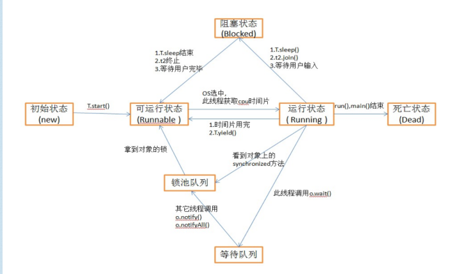
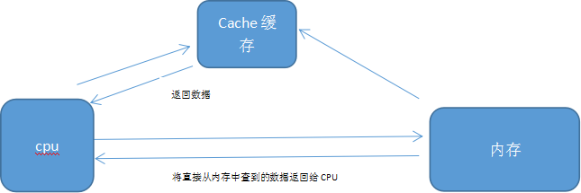
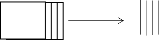
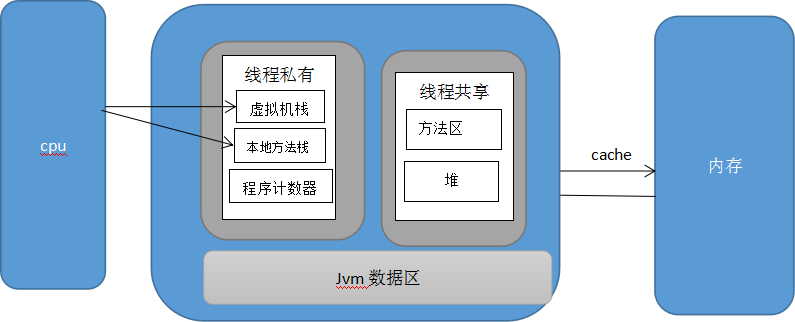
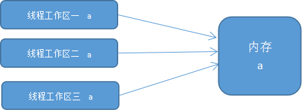

进程和线程：可以单独运行的程序，对于传统的计算机操作系统而言，进程是一个进行资源分配和调度的基本单位，但是每次操作系统对不同的进程或者软件进行切换的时候就会产生一次的数据回收和 再次分配新的数据，所以传统的计算机操作系统对于这种情况作出了改进；所以当下的计算机操作系统是仅仅将进程当成一个分配资源的基本单位，而将线程当成执行和调度的基本单位，因为线程每次进行资源的调度和程序的执行只需要占用很小的内存，开销很小，从而增大了cpu吞吐率
综上所述：
线程：一段可以单独执行的代码段
进程：包括当下的所有线程，执行所有线程的对应资源和表示此进程运行状态的标志（一个正在运行的包含所有线程和运行线程的所有资源以及标志其正在运行的状态标志）
顺序执行：一个老师辅导多个学生写作业，先辅导第一个学生，问题讲解完毕后等第一个学生把讲解的问题消化写完后再辅导第二个学生
并发：一个老师辅导多个学生，先辅导第一个学生，问题讲解完毕后，当第一个学生消化第一个问题的同时去辅导第二个学生，这样便节省了很多时间，老师可以不停的辅导（CPU执行i/o操作）
并行：多个老师一对一单独辅导一个学生

新建状态：new关键字新建一个线程
可运行状态和运行状态
① 新建状态的线程不会立刻运行，当执行start方法后才进入可运行状态进而可以等待CPU分配时间，当CPU分配到本线程时间后，线程状态进入运行状态
② 当前线程执行sleep()方法，join()方法或者等待用户输入的时候，本线程进入阻塞状态；当sleep()，wait()方法执行完毕或者用户输入完毕后线程进入可运行状态
③ 当前线程执行wait()方法后本线程进入等待池，若其它线程执行notify()方法，会从等待池里面随机唤醒一个线程进入锁池；若其它线程调用了notifyAll()方法，则把等待池里面所有的线程都放入锁池
④ 锁池里面的线程获取到锁对象，线程开始执行
死亡状态：
① 线程执行完毕自然死亡
② 出现并抛出异常，强行扼杀
大学里面学过计算机组成原理的应该都懂得一个道理，CPU运行速度远远大于硬件内存读写速度，因此产生因为硬件速度限制计算机运行速率的问题；所以运行速度介于内存和cpu之间的cache缓存也就应运而生，它负责临时存储内存里面的数据，当CPU要根据一个地址寻找一个数据的时候会先去cache缓存中寻找，若没有此数据则去内存中读取，然后将对应内存的数据放入cache缓存中方便下次读取；所以cache就像内存和CPU之间的搬运工，如下图

当下计算机普遍是多核CPU，我们现在来看下图

多核CPU正面 多核CPU侧面
因为当下计算机普遍是多核CPU，可以实现真正意义上的并行（多个线程同时刻执行），也更加能实现线程并发（同一时间段内执行多个同样的线程），但是多个线程是怎么实现对数据库的操作的呢？这就涉及到jvm了，如图

虚拟机栈：用于存储局部变量表，操作数栈，动态链接，方法出口等信息。
本地方法：用于存储进程调用的native方法
知道上面这些和之前我们在第一部分提到的线程和进程的区别就好说啦；因为一个进程就相当于一个软件，当一个软件启动的时候jvm会作出什么工作呢？
① 当进程启动时操作系统会将此进程运行时需要的所有相关数据都加载到jvm对应区域，把图片，视频，等所有的或者部分（视当前运存大小而定）静态资源加载到方法区内，此时进程启动完毕，等待要执行的线程
② 单线程时：线程开始执行，CPU根据虚拟机栈里面的存储局部变量表去堆里面找寻对应的数据，若找不到则去内存中寻找，然后线程结束的时候会将此单个线程工作区里面的数据写回到内存。
③ 多线程时（不加锁）：当出现多线程的时候，jvm会把堆根据线程一一对应进行分解变成一个个的线程工作区，每一个工作区内的数据都是一样的，相当于将内存的对应数据映射到工作区。当等待池中的某个线程获取到CPU时间后开始执行；若其对应的线程工作区里面的数据发生改变，则不会导致对应内存的数据发生变化，如果此时其它在等待池的线程获取到CPU时间的时候也对自己线程工作区的此数据修改则产生数据不一致，这是产生数据不一致的根本原因。
④ 多线程时（加锁）：当jvm在加载 .class 文件时，当遇到synchronized关键字，则会在被锁代码前面加monitorenter关键字，在末端加monitorexit关键字，等待池中的某个线程获取到对象监听器（锁）的时候线程工作区从内存读取数据然后此线程进入锁池，锁池中的线程获取到cpu时间则对自己线程工作区的数据进行操作；每遇到一次monitorenter时对象的锁计数器加一，若遇到monitorexit时锁计数器减一，当计数器为0的时候释放锁；然后将对处理后的对象数据写回到内存中从而实现线程之间数据的通信。如下图

综上所述：加锁是为了线程安全，本质上是为了在每次线程执行完毕之后将工作区的的对象的数据写回到内存；每次线程执行之前将工作区对应的数据更新从而保持数据的一致性和实现线程之间的通信，然而实现这种效果需要满足多线程的原子性，可见性和有序性
原子性：各个线程之间进行数据的互斥访问，同时刻只能有一个线程对数据进行操作
可见性：一个线程对数据修改后可以被其它线程看到(线程之间实现通信)
有序性:在Java内存模型中，允许编译器和处理器对指令进行重排序，但是重排序过程不会影响到单线程程序的执行，却会影响到多线程并发执行的正确性。而有序性是指程序的代码执行顺序和语句的顺序是一致的。
原子性：保证原子性的方法有atomic和synchronized，前者应用不是太多，这里主要介绍后者；
synchronized修饰的对象有四种（原理在上文已经提到）：
（1）修饰代码块，作用于调用的对象；
（2）修饰方法，作用于调用的对象；
（3）修饰静态方法，作用于所有对象；
（4）修饰类，作用于所有对象。
可见性：volatile，声明变量的时候前面添加volatile关键字，每次多线程对工作区内的此变量进行操作后都强制将其写回内存，每次要操作此变量时强制更新来实现多线程的工作区数据和内存对应数据保持一致，进而间接实现多个线程之间的数据通信。
有序性：可以通过volatile、synchronized、lock保证有序性。
另外，JMM具有先天的有序性，即不需要通过任何手段就可以得到保证的有序性。这称为happens-before原则。
如果两个操作的执行次序无法从happens-before原则推导出来，那么它们就不能保证它们的有序性。虚拟机可以随意地对它们进行重排序。
happens-before原则：
1.程序次序规则：在一个单独的线程中，按照程序代码书写的顺序执行。
2.锁定规则：一个unlock操作happen—before后面对同一个锁的lock操作。
3.volatile变量规则：对一个volatile变量的写操作happen—before后面对该变量的读操作。
4.线程启动规则：Thread对象的start()方法happen—before此线程的每一个动作。
5.线程终止规则：线程的所有操作都happen—before对此线程的终止检测，可以通过Thread.join()方法结束、Thread.isAlive()的返回值等手段检测到线程已经终止执行。
6.线程中断规则：对线程interrupt()方法的调用happen—before发生于被中断线程的代码检测到中断时事件的发生。
7.对象终结规则：一个对象的初始化完成（构造函数执行结束）happen—before它的finalize()方法的开始。
8.传递性：如果操作A happen—before操作B，操作B happen—before操作C，那么可以得出A happen—before操作C。
有部分借鉴的大佬的，有些自己总结的，欢迎指出错误